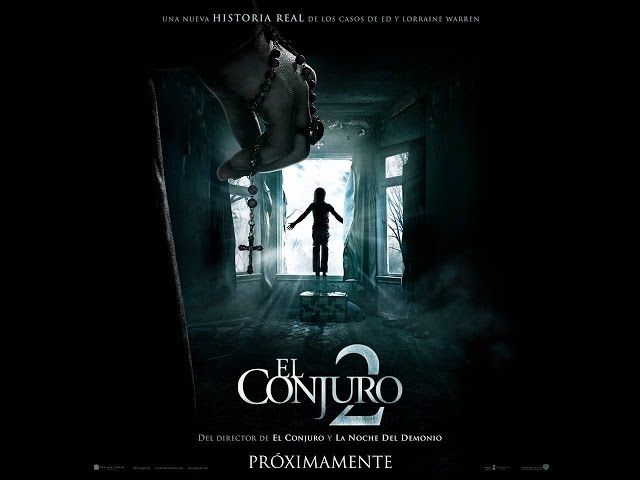

Terror
El conjuro
Publicado el 5 de Noviembre de 2025 · Por Micaela Nowak

"El Conjuro" es una película de terror de 2013 dirigida por James Wan que relata el caso real de los investigadores paranormales Ed y Lorraine Warren, quienes ayudan a la familia Perron a enfrentar una presencia demoníaca en su casa de Rhode Island en 1971. La película, protagonizada por Vera Farmiga y Patrick Wilson como los Warren, se basa en la historia de una bruja que maldijo la propiedad.
Reparto
- Vera Farmiga — Lorraine Warren
- Patrick Wilson — Ed Warren
- Lili Taylor — Carolyn Perron
- Ron Livingston — Roger Perron
¿A quién se la recomiendo?
A quienes disfrutan el terror atmosférico sin exceso de gore, con atención al sonido y al ritmo. Ideal si te gustó Insidious o La maldición de Hill House.
Lo que dijo la gente sobre esta película
“Wan dirige con precisión quirúrgica cada silencio y golpe de sonido.”
“El terror vuelve a lo esencial: tensión, clima y sugestión.”
“Una de las experiencias de miedo más sólidas del cine reciente.”